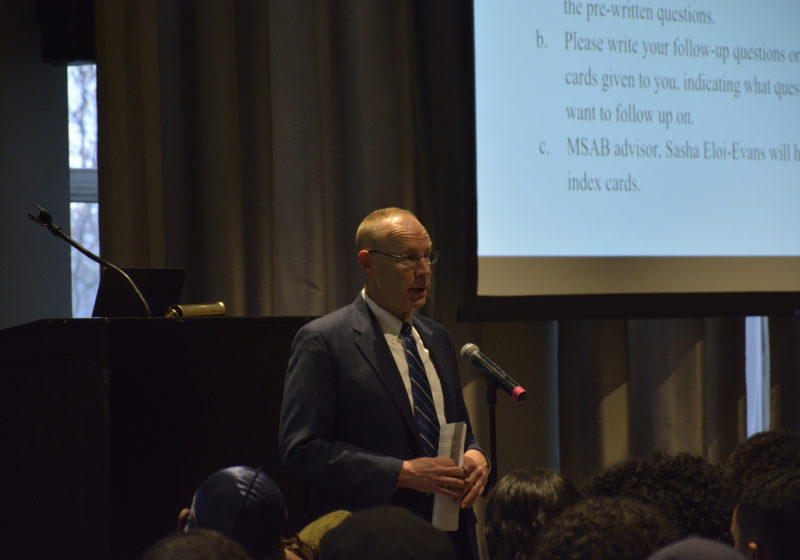

A DPS Timeline
-
Sworn peace officers added to DPS
12 September, 2013
25 new officers were sworn under state law, giving them authority similar to a cop’s. They were unarmed.
-
Mark Fischer becomes DPS director
20 November, 2013

After serving as deputy director since 2011, Fischer became the director of Public Safety at the end of 2013.
-
Commission evaluates potentially arming officers
21 April, 2016
An administration-led commission got feedback on the prospect of arming DPS officers. Many students voiced opposition.
-
Commission recommends arming Med Center officers
8 September, 2016
The commission recommended the med center get 38 officers broken into three shifts, as well as arming 4 members of command staff.
-
Seligman holds two public forums on the recommendation
18 September, 2016

At the forum, Seligman said the recommendation was not the beginning of a greater arming plan.
-
Med center arming announced, Public Safety Review Board formed
13 October, 2016
With arming of 38 officers at the med center and four command staff members, administration also created the Public Safety Review Board.
Message on the Security Commission Report: Adopting the Recommendations
-
DPS proposes arming officers on the Eastman and River Campuses
25 October, 2018
The proposal has two suggestions: The first is that armed supervisors get access to campus in non-emergency situations. The second is that two armed vehicle officers be stationed on River Campus, and one armed foot patrol officer be stationed at Eastman. Each position would have five shifts, so that would be arming a total of 15 officers.
-
MSAB
in mass email: Armed proposal ‘endangers many’
10 November, 2018
Curabitur purus sem, malesuada eu luctus eget, suscipit sed turpis. Nam pellentesque felis vitae justo accumsan, sed semper nisi sollicitudin...
-
UR
announces ad hoc committee for gun proposal
11 November, 2018
Fusce ullamcorper ligula sit amet quam accumsan aliquet. Sed nulla odio, tincidunt vitae nunc vitae, mollis pharetra velit. Sed nec tempor nibh...
-
MSAB
wins public forum with surprise Faculty Senate sit-in
19 November, 2018
Fusce ullamcorper ligula sit amet quam accumsan aliquet. Sed nulla odio, tincidunt vitae nunc vitae, mollis pharetra velit. Sed nec tempor nibh...
-
MSAB
finds DPS forum lacking
3 December, 2018
Fusce ullamcorper ligula sit amet quam accumsan aliquet. Sed nulla odio, tincidunt vitae nunc vitae, mollis pharetra velit. Sed nec tempor nibh...
-
Takeaways
from the DPS forum
9 December, 2018
Fusce ullamcorper ligula sit amet quam accumsan aliquet. Sed nulla odio, tincidunt vitae nunc vitae, mollis pharetra velit. Sed nec tempor nibh...
-
From
a variety of backgrounds, ad hoc committee members mostly avoid stance on gun
proposal
21 January, 2019
Fusce ullamcorper ligula sit amet quam accumsan aliquet. Sed nulla odio, tincidunt vitae nunc vitae, mollis pharetra velit. Sed nec tempor nibh...